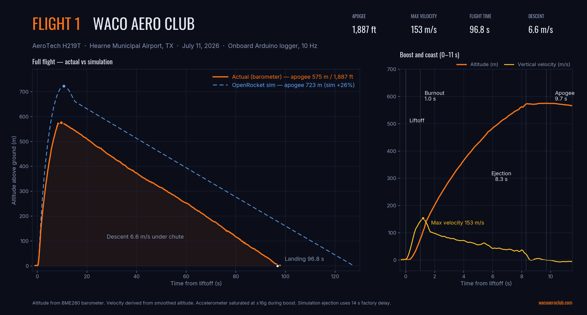

Flight Profile — Actual vs. Simulation
Flight Data
Barometer
July 2026
Overview
The full flight from liftoff to touchdown, measured by the onboard barometer, overlaid with our pre-flight OpenRocket prediction. The rocket boosted for about 1 second, coasted for 7.3 more, deployed at 8.3 seconds, topped out at 575 m (1,887 ft) at 9.7 seconds, and rode the chute down for 87 seconds to a soft landing.

Left: full flight, actual (orange) vs. simulation (dashed blue). Right: boost and coast detail with vertical velocity.
Key Events
| Event | Time | Altitude (AGL) |
|---|
| Liftoff | 0.0 s | 0 m |
| Motor burnout | ~1.0 s | ~76 m |
| Ejection charge | 8.3 s | ~570 m |
| Apogee | 9.7 s | 575 m |
| Landing | 96.8 s | 0 m |
Recovery Check
Average descent rate was 6.6 m/s, holding steady at ~6.8 m/s all the way to the ground — inside the standard 4.5–7 m/s safe window for this weight class. The chute was correctly sized and fully inflated for the entire descent.
Simulation vs. Reality: A 26% Overshoot
Analysis
OpenRocket
July 2026
The Numbers
| Metric | OpenRocket Sim | Actual | Difference |
|---|
| Apogee (AGL) | 723 m | 575 m | Sim over by 26% |
| Max velocity | 181 m/s | ~153 m/s | Sim over by ~16% |
| Burn time | 1.08 s | ~1.0 s | Match |
| Time to apogee | 10.7 s | 9.7 s | −1.0 s |
| Descent rate | 6.2 m/s | 6.6 m/s | Close match |
Interpretation
The motor performed exactly as advertised — burn time matched the sim almost perfectly. But the rocket flew slower and lower than predicted, which means it experienced more drag and/or carried more mass than the model assumed. Both signals point the same direction: our simulated rocket was cleaner and lighter than the real one. Surface finish, launch hardware, epoxy fillets, paint, and the data logger all add drag and weight that the stock model underestimates.
A small part of the gap has a separate, known cause: early parachute deployment, covered in the next section.
Takeaway: Treat OpenRocket apogee predictions for our builds as optimistic until calibrated against flight data. For the next flight we will weigh the finished rocket and tune the sim's drag coefficient until it reproduces this flight — then predictions become trustworthy.
How Early Deployment Cut Our Apogee
Analysis
Recovery
July 2026
What Happened
The ejection charge fired at 8.3 seconds — about 7.3 seconds after burnout and 1.4 seconds before the rocket reached its natural peak. At that moment the rocket was still climbing at roughly 25–30 m/s. Deploying the chute killed that remaining upward momentum: the rocket only gained about 6 more meters after ejection instead of coasting to its full ballistic apogee.
What It Cost
A rocket climbing at ~25–30 m/s and decelerating at ~10.5–11.5 m/s² (gravity plus a little drag) had roughly 30–40 m of climb left in it. We banked about 6 m of that. Our best estimate is that early deployment cost roughly 30 m (~100 ft) of apogee — without it, the flight would have peaked around 600–615 m instead of 575 m.
| Scenario | Apogee (approx.) |
|---|
| Actual (deployed 1.4 s early) | 575 m / 1,887 ft |
| Estimated ballistic (deploy at peak) | ~600–615 m / ~1,970–2,020 ft |
Uncertainty note: the barometer reading is disturbed for a moment by the ejection charge's pressure pulse, so the deployment velocity carries real uncertainty — that is why we report a range rather than one number.
Why It Fired Early
The motor's factory delay was drilled down to a ~10-second target (OpenRocket's computed optimum was 9.7 s), but the delay actually burned for about 7.3 seconds — roughly 2.7 seconds short. Delay elements have real manufacturing and drilling tolerance, and this flight is our first measured data point on how much.
Perspective: Firing 1.4 s early at ~25–30 m/s is a much better outcome than firing late — a late deployment happens while the rocket is accelerating downward, with higher shock loads on the harness. The chute and harness took the early deployment without damage. This also explains only ~20% of the 148 m gap between simulation and reality — the rest is drag and mass, per the section above.
Spin and Stability
Flight Data
Gyroscope
July 2026
What the Gyro Showed
| Measurement | Value | Meaning |
|---|
| Roll rate (boost) | ~0.37 rev/s | Gentle fin-induced spin |
| Roll rate (coast) | ~0.48 rev/s | Steady, consistent spin |
| Pitch/yaw rates (coast) | ~24 dps RMS | Small oscillations, no coning |
| Max tilt from vertical | ~17° | Modest weathercocking into the wind |
Interpretation
The flight was clean and stable. A slow half-revolution-per-second roll is normal — tiny asymmetries in fin alignment induce it, and the spin actually helps by averaging those same asymmetries out. Pitch and yaw stayed small through the whole ascent, and the modest lean into the wind is expected behavior for a stable rocket. Tilt values come from integrating the gyro, so treat them as good estimates rather than exact measurements.
3D Ascent Reconstruction
Flight Data
July 2026
What This Is
A 3D reconstruction of the ascent, built entirely from the onboard data: altitude from the barometer, and the rocket's tilt from integrating the gyroscope (a technique called dead reckoning). Because a stable rocket flies where it points, the tilt history reveals the lateral path. Drag to orbit and scroll to zoom. The gray line on the ground is the path's shadow.
Drag to orbit · scroll or pinch to zoom
T+0.0 s · 0 m AGL
Boost
Coast
Apogee
Accuracy & Limits
- Vertical axis: directly measured by the barometer — high confidence.
- Lateral path: estimated from gyro integration at 10 Hz — the shape is roughly right, but treat the ~76 m lateral drift as ±50%, and the compass direction is arbitrary.
- Ascent only: the ejection event spins the rocket faster than 10 Hz sampling can track, so orientation knowledge ends at deployment. The descent drift was not measurable with this logger.
Instrumentation: What Worked, What Didn't
Avionics
Lessons Learned
July 2026
Scorecard
| Sensor | Status | Notes |
|---|
| BME280 barometer | Worked | Clean altitude data for the entire flight — the backbone of every chart on this page |
| Gyroscope | Worked | Captured roll and tilt through ascent; 10 Hz is too slow to track the ejection tumble |
| Accelerometer | Partial | Saturated at its ±16g limit during boost — true peak acceleration was never recorded |
What We'd Change
- Wider accelerometer range: configure ±32g or higher (or add a high-g sensor) so boost acceleration isn't clipped.
- Faster logging: 10 Hz was enough for altitude but under-samples fast events like ejection; 50–100 Hz is the goal for the next logger revision.
- Position tracking: the rocket's drift direction is unmeasurable with the current logger — the planned Eggfinder GPS tracker project adds real position data for future flights.